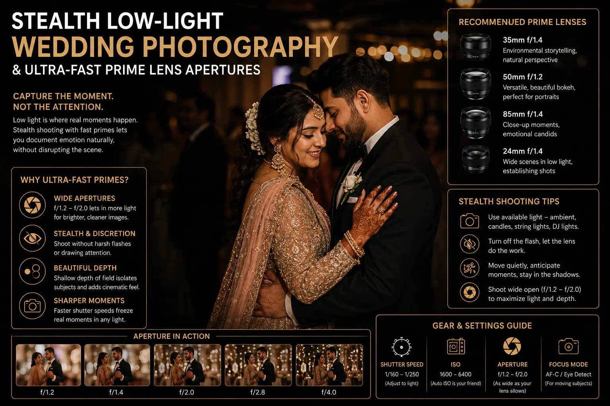
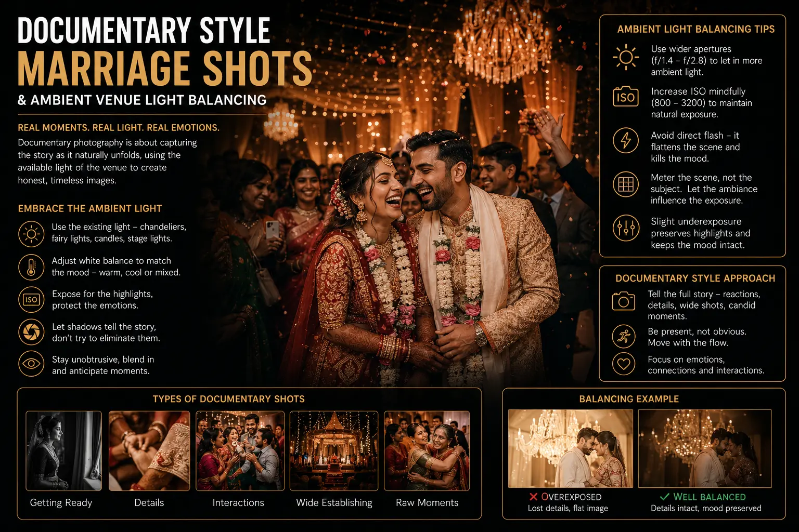

Directing Stealth Lighting Setups for Natural, Unposed Reception Party Candids
The Problem with Flash Photography at Wedding Receptions
The wedding reception is where the most authentic, emotionally rich moments of the celebration happen — unscripted laughter between old friends, grandparents watching the couple dance, children stealing sweets from the buffet, the couple sharing a quiet word in the middle of chaos. These moments are the soul of premium candid wedding albums, and they are also the moments most frequently destroyed by conventional flash photography.
When a photographer fires an on-camera flash in a dimly lit reception hall, several things happen simultaneously: the subject flinches or squints at the sudden burst of light; nearby guests notice the photographer's presence and change their behaviour; the warm, atmospheric venue lighting is obliterated by the harsh, cold, frontal blast of the flash; and the resulting image shows a brightly lit subject floating in a dark void — a surveillance photograph masquerading as wedding documentation.
Stealth Low-Light Wedding Photography is the discipline that solves this problem — using hidden, pre-positioned lighting, ultra-fast prime lens apertures, and high-ISO camera capabilities to capture reception moments in the venue's natural atmospheric light, producing images that feel authentic, warm, and emotionally true. It is the technical foundation of every Unposed Reception Candids approach and the hallmark of the Best wedding photographers near me who prioritise documentary authenticity over staged perfection.
The Stealth Lighting Architecture
The foundation of Stealth Low-Light Wedding Photography is the pre-positioned lighting system — small, discreet light sources placed strategically around the reception venue before the event begins. These lights supplement the venue's ambient illumination without being visible to guests:
- Small LED panels with magnetic or clamp mounts. Compact, battery-powered LED panels (Aputure MC, Lume Cube, Nanlite LitoLite) are positioned on shelves, behind floral arrangements, clamped to pillars, or tucked behind decorative elements. Set to a warm colour temperature (3000-3500K) that matches the venue's ambient lighting, these panels create pools of soft, flattering light in key areas — guest seating clusters, the bar area, the dance floor perimeter, and the couple's table.
- Bounce flash positioned away from camera. Instead of firing flash directly from the camera, experienced photographers position remote flash units on light stands in corners of the room, aimed at the ceiling or walls. Triggered wirelessly when needed, these off-camera flashes produce bounced, diffused light that blends with the venue's ambient illumination — adding exposure without the harsh, frontal blast that on-camera flash creates. This technique is a cornerstone of ambient venue light balancing.
- Fairy light and candle amplification. Many reception venues feature decorative fairy lights, candles, and accent lighting that create beautiful atmospheric light — but at levels too low for conventional photography. Rather than overpowering these sources with flash, stealth photographers enhance them by positioning small LED panels that mimic the warm colour temperature of the decorative lighting, adding just enough exposure to enable capture without changing the visual character of the scene.
- Colour temperature consistency. Every stealth light source must be colour-temperature-matched to the venue's dominant ambient lighting. Mixing cool-white LED panels (5500K) with warm tungsten venue lighting (2800-3200K) creates colour cast conflicts that look unnatural and require extensive post-production correction. Set all supplemental lights to match the venue's warmth — even if this means sacrificing some colour accuracy for atmospheric consistency.
Authentic Moments
Unposed Reception Candids captured with stealth lighting preserve the natural behaviour, genuine expressions, and authentic atmosphere that disappear the moment guests notice a photographer's flash.
Documentary Storytelling
Documentary style marriage shots require the photographer to be invisible — observing and capturing moments without directing, posing, or disrupting the natural flow of the celebration.
Premium Album Quality
Premium candid wedding albums are defined by images that feel real — warm, atmospheric, emotionally resonant photographs that transport the viewer back to the moment as it actually felt.
Artistic Vision
Artistic wedding photo concepts use the reception's natural light as a creative element — silhouettes against dance floor lights, warm candlelit portraits, and atmospheric environmental captures.

The Lens Arsenal: Ultra-Fast Primes for Low Light
Stealth lighting provides supplemental illumination, but the primary technical enabler of flash-free reception photography is the lens. Ultra-fast prime lens apertures — f/1.2, f/1.4, and f/1.8 — allow the camera to capture usable images in light levels where zoom lenses and slower primes would produce dark, noisy, or motion-blurred results:
- 35mm f/1.4 — The environmental storyteller. This lens captures subjects within their context — the dance floor crowd, the table setting, the venue architecture. At f/1.4, it gathers enough light for hand-held shooting in most reception environments while maintaining enough depth of field to show environmental context.
- 50mm f/1.2 — The versatile candid lens. The classic candid portrait focal length, close enough to capture intimate moments while maintaining enough distance to remain unobtrusive. At f/1.2, this lens can shoot in near-darkness while producing the shallow depth-of-field bokeh that isolates subjects from busy backgrounds.
- 85mm f/1.4 — The intimate portrait lens. Used for tight close-ups of faces, hands, and emotional reactions from a comfortable distance. The compression and shallow depth of field at this focal length and aperture produce the most flattering, cinematically beautiful candid portraits — isolating the subject against a creamy wash of blurred background light.
- High-ISO confidence. Modern full-frame camera bodies (Sony A7 IV/A9 III, Canon R6 III, Nikon Z6 III) produce clean, publication-quality images at ISO 6400-12800 — levels that would have produced unusable noise just five years ago. This high-ISO capability, combined with fast prime lenses, enables the professional camera crew to capture reception moments in ambient light that was previously impossible without flash.
The Documentary Approach: Being Invisible at the Reception
Documentary style marriage shots at receptions require more than technical skill — they require a specific behavioural discipline from the photographer:
Anticipation Over Reaction
- Study the room constantly — identify developing moments before they peak. The grandmother watching the dance floor from her seat, the children sneaking away from the table, the best man about to deliver his toast.
- Position yourself before the moment happens — do not chase moments after they start. By the time you react and raise the camera, the authentic expression has passed.
- Use artistic wedding photo concepts to frame reception moments within the venue's visual environment — shooting through doorways, using decorative elements as foreground interest, incorporating the venue's architecture.
- Capture sequences, not singles — photograph 3-5 frames of each developing moment to ensure the peak expression and interaction are captured.
Physical Invisibility
- Move slowly and predictably — sudden movements attract attention. Blend into the periphery of groups rather than inserting yourself into the centre.
- Use longer focal lengths (85mm, 135mm) to capture intimate moments from a distance that does not intrude on the subjects' personal space.
- Avoid chimping (looking at the camera screen after every shot) — this draws attention and signals to guests that they are being photographed.
- Dress to blend with the event's dress code — a professional camera crew in formal attire is less conspicuous than one in casual wear.
Light Discipline
- Rely on pre-positioned stealth lights and available ambient light — fire on-camera flash only as an absolute last resort for critical moments that cannot be missed.
- Master ambient venue light balancing — reading the venue's mixed lighting (tungsten, LED, fairy lights, candles, DJ lights) and adjusting white balance and exposure in real time.
- Use the venue's own lighting design as a creative tool — backlight from stage spots, warm glow from candles, coloured wash from DJ lighting — to create atmospheric images that honour the venue designer's vision.
- Turn off the camera's autofocus illuminator beam — that red/green light projected onto subjects' faces in low light is a stealth-breaking dead giveaway.

Conclusion
Stealth Low-Light Wedding Photography represents the most technically demanding and emotionally rewarding discipline in wedding coverage. By combining pre-positioned stealth lighting, ultra-fast prime lens apertures, high-ISO camera confidence, and the behavioural discipline of documentary observation, photographers can produce Unposed Reception Candids that capture the authentic emotional life of the celebration — the real laughter, the genuine tears, the spontaneous connections that make each wedding unique.
The resulting premium candid wedding albums are defined by Documentary style marriage shots that feel real, warm, and atmospheric — images where the viewer does not see the photographer's presence because the photographer was never noticed. Ambient venue light balancing and artistic wedding photo concepts transform the venue's own lighting into a creative partner, producing reception imagery with a cinematic, atmospheric quality that flash photography can never achieve.
At The PhD Ads, our professional camera crew specialises in Stealth Low-Light Wedding Photography — pre-positioning discreet lighting, shooting with ultra-fast prime lens apertures, and capturing Unposed Reception Candids that make us one of the Best wedding photographers near me for couples who value authentic documentary wedding storytelling.
Key Topics
Authentic Candids Without Flash Disruption
At The PhD Ads, we direct stealth lighting setups for wedding receptions — capturing genuine, unposed moments with invisible lighting, fast prime lenses, and documentary observation that preserves the celebration's natural atmosphere.
Email: team@e2o.in